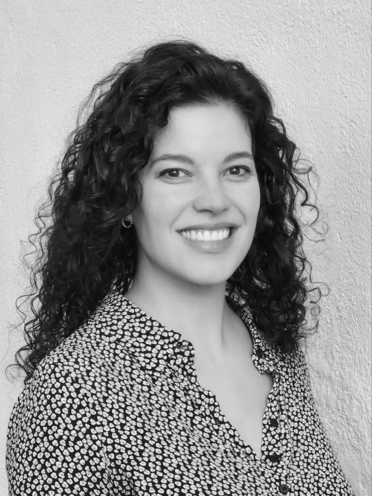

Laia Fibla
I am a FRQSC Postdoctoral Fellow at the Infant Research Laboratory at Concrodia University in Montreal, Canada.
I am developmental psychologist researching how infants acquire language through their environments. My current research is focused on investigating how children that hear one or multiple languages learn words and build their vocabulary, and how this varies across diverse societies and cultures. I also study how differences in the language that children hear around them shape the structure of the brain, as well as their language skills throughout development. I use a wide range of experimental techniques from cognitive sciences, including portable and in-lab eyetracking, home audio recordings and computational modelling.
I will join the University of Girona as an Assistant Professor of Psychology in Summer 2026.
General research interests: Language development, Word learning, Vocabulary, Language exposure, Cross-cultural, Bilingualism, Multilingualism, Brain development, Myelin, Language processing.
Publications
Preprints
Journal articles
Conference Presentations
laia.fiblareixachs [at] mail [dot] concordia [dot] ca
Concordia Infant Research Laboratory
Department of Psychology,
7141 Sherbrooke St. West, PY-033,
Montreal QC H4B 1R6
Canada
Office SP-153.21